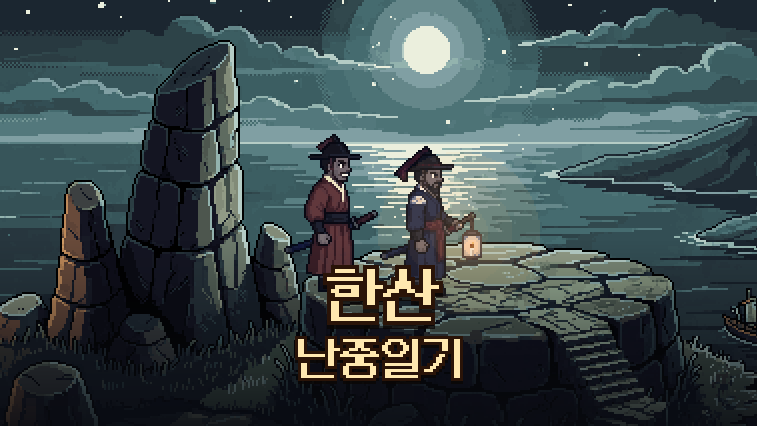

고전 어드벤처의 재미
복잡한 조작보다 관찰과 대화, 그리고 아이템의 활용이 중요합니다.
탐험
조선 수군의 여러 장소에서 단서를 찾아보세요.
대화
개성 있는 사람들과의 대화가 이야기를 이끕니다.
퍼즐
관찰한 정보와 아이템을 연결해 문제를 해결하세요.

이순신과 함께 조선 수군의 세계를 탐험하세요. 대화와 관찰, 아이템 퍼즐로 이야기를 풀어가는 역사 픽셀 어드벤처입니다.
첫인상, 퍼즐 난이도, 진행 중 막힌 부분, 번역과 오류까지. 편하게 남겨주세요. 작성한 내용은 Google 설문을 통해 접수됩니다.
설문은 새 창에서 열립니다. 응답 공개 여부와 로그인 필요 여부는 Google 설문 설정에 따릅니다.
상세한 버그 기록은 GitHub Issues에도 남길 수 있습니다. GitHub 로그인이 필요하며 글은 공개될 수 있습니다.
게임의 분위기를 먼저 만나보세요. 영상은 자동으로 재생되지 않습니다.
한국어 오프닝 · 클릭하여 재생 · 데모 스포일러 주의
게임의 공간과 대화, 탐험 시스템을 살펴보세요. 이미지를 누르면 크게 볼 수 있습니다.
복잡한 조작보다 관찰과 대화, 그리고 아이템의 활용이 중요합니다.
조선 수군의 여러 장소에서 단서를 찾아보세요.
개성 있는 사람들과의 대화가 이야기를 이끕니다.
관찰한 정보와 아이템을 연결해 문제를 해결하세요.
본 작품은 1592년 임진왜란을 배경으로 한 독립 창작 게임이며, 일부 인물 관계·대사·사건·퍼즐은 허구 또는 각색입니다. 제작 과정에 AI 보조 도구를 활용했습니다. 영화 〈한산〉의 공식 게임이나 제휴 작품이 아닙니다.